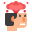

Сашко
Студент
35
-15
Гроші

40
-10
Нерви
40
-10
Законність
60
+10
Репутація
Питання
2/5
З'явилися чутки, що прямо перед вашим будинком планують звести хмарочос, в якому розмістять фабрику з переробки плутонію. Що робити з цією новиною?
Пройтись по сусідам, організувати протестний мітинг, пройтися маршем до офісу місцевої влади.
Ти пишеш запит про надання публічної інформації і ввічливо запитуєш:
"Та ви там що, охрініли з цим плутонієм посеред міста?!"
Ти встановлюєш на місці потенційного будівництва саморобну скульптуру.
Тепер це важливе культурне місце, будувати не можна.
Ти пишеш проникливі листи в ООН, Всесвітній фонд дикої природи та ЮНЕСКО і вимагаєш привернути увагу світової спільноти до цієї проблеми.